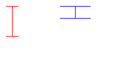

Name: ________________________________________________________
Umail Address: __________________________________@ umail.ucsb.edu
Circle Lab section: 8AM 10AM 11AM noon
Link to Printer Friendly PDF Version Link to Sample Solutions
Please write your name only on this page. That allows me to grade your exams without knowing whose exam I am grading.
This exam is closed book, closed notes, closed mouth, cell phone off,
except for:
There are 100 points worth of questions on the exam, and you have 3 hours (180 minutes) to complete the exam.
A hint for allocating your time:
That will leave you with 80 extra minutes to check your work, or come to problems that gave you trouble.
double: one called a for the real part, and another called b for the imaginary part. struct Complex (from the previous question).
void function called initComplex that takes three parameters:cPtr that is a pointer to a struct ComplexaVal of type doublebVal of type doubleWith this in mind, we can write a function that takes a struct Complex as a parameter, and returns a new struct Complex that is the square of the one passed in.
Here is an incomplete definition for this function. Fill in the missing details.
For full credit: do this by
using a function call to your initComplex function defined in the previous problem to set the values in the variable ans.
It is possible to write the answer to this problem with just one line of code.
(Or, for partial credit, do it some other way.)
struct Complex squareComplex(struct Complex c)
{
struct Complex ans;
// You may declare additional variables and do
// additional steps here if your answer requires them,
// but there is a way to solve this that doesn't require that.
// a function call to initComplex should come after this comment
// that results in setting ans to the square of c
return ans;
}
iStar that takes two parameters, both integers, called w and h (standing for width and height), and returns an int.printf calls, using stars (*), whenever the parameters for width and height have legal values. iStar(3,4) |
*** * * *** |
iStar(3,3) |
*** * *** |
iStar(5,4) |
***** * * ***** |
void printNChars(int n, char c)
{
int i;
for (i=0; i<n; i++)
printf("%c",c);
}
Reminder: a function definition, NOT a main program!
If you need extra room,
use the space after the questions on the next page
blah.rw-r--r--? rw-r--r--?
struct Point { double x;
double y;
};
void initPoint(struct Point *p, double xVal, double yVal);
struct Point makePoint(double xVal, double yVal);
void drawLine(struct Drawing *d, struct Point p1, struct Point p2, int color);
Using these, write the definition for a function drawI that draws the letter I (with bars on top and bottom, just like in the previous problem.)
Here is the function prototype for the drawI function you should define:
void drawI(struct Drawing *d,And here is a sample main, and its output
struct Point ul, // upper left corner
double w, // width
double h, // height
int color);
int main()
{
struct Drawing d;
initDrawing(&d, DRAWINGTYPE_COLOR, 200, 100, COLOR_WHITE);
|  |
If you need extra room, use the space on the next page
Extra space for your answer to question 7
(12 pts) Together with this exam, there is a program (on a separate handout).
Assuming each of the expressions below appeared in this program, indicate the type they would have, or write error if the expression is not valid, e.g.
The first few are done for you as an example.
Hints--for full credit:
See solution
| Expression | Type |
| a | double * |
| *b | error |
| *e | |
| &f | |
| *g | |
| f | |
| e->center.x | |
| &argc |
mysteryFunction. As parameters, it takes an array of integers a, and the length of that array n as parameters, and returns an integer. What it actually computes is a mystery for you to solve.
int mysteryFunction(int *a, int n)
{
if (n==0)
return 0;
if (a[0]%2!=0)
return 1 + mysteryFunction(a+1, n-1);
else
return mysteryFunction(a+1, n-1);
}
average, countEven, countMax, countMin, countNeg, countOdd, countPos, countSevens, indexFirstEven, indexFirstOdd, indexOfMax, indexOfMin, isSorted, maxValue, minValue, noDups, sum.for loop or while loop) instead of recursion.Total points: ?
Program for question about types
// types.c Code for exam question, 11/15/2009
// P. Conrad for CS16, 09F, UCSB
#include <stdio.h>
struct Point {
double x;
double y;
};
struct Date {
int d;
int m;
int y;
};
struct Circle {
struct Point center;
double radius;
};
int main(int argc, char *argv[])
{
double *a;
double b;
int *c;
int d;
struct Circle *e;
struct Circle f;
struct Date *i;
struct Date j;
struct Point *g;
struct Point h;
// Program does no useful work
// It is just the basis of a homework assignment about types
// Pretend there is useful code here, and then
// answer questions about the types of various expressions
// as if they appeared right here.
return 0;
}